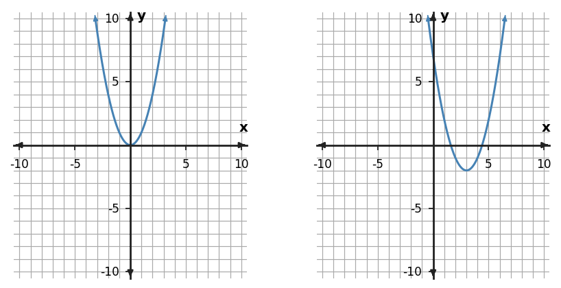

Translations
Function Families and Transformations
Move landmarks consistently, then let the equation confirm the shift.
Learning Target
Students will graph and write translated functions using key points and key features.
- I can build translated graphs by moving key points and key features from a parent function.
- I can use horizontal and vertical shifts to write equations for translated functions.
- I can predict how changing values in an equation moves a graph left, right, up, or down.
Vocabulary / Key Notation Preview
parent function · translation · horizontal shift · vertical shift · key point
Sort the vocabulary. Write each vocabulary word in the column that best matches what you know right now. You may move a word later.
| Know for sure | Recognize | Don't know yet |
|---|---|---|
What's to Come
DO NOT SOLVE IT YET.
Circle anything familiar, underline symbols, labels, conditions, data, or features that seem important, and write short notes about what you think may matter later.
A parabola has been moved without changing its shape. Use the point pairs to describe how every point moved. Predict where the vertex moved, then compare your prediction with the two graphs below.
| parent point | new point |
|---|---|
| (-1,1) | (2,-1) |
| (0,0) | (3,-2) |
| (1,1) | (4,-1) |

Let's Get Started
Skim the section. Record what catches your attention before you read closely.
| What I noticed | |
|---|---|
| What I predict | |
| What I wonder |
Annotate the words and visuals together. Underline evidence, circle or highlight bold vocabulary, label arrows, measurements, or important features, connect sentences to figures, and jot short questions or connections in the margins.
I can build translated graphs by moving key points and key features from a parent function.
A translation moves a graph without changing its basic shape. Every point moves the same horizontal amount and the same vertical amount, so lengths, angles, and the overall form of the parent graph are preserved. A translated absolute-value graph is still V-shaped; a translated parabola is still a parabola.
Instead of trying to redraw every point, track a few meaningful key points or features. A vertex, intercept, corner, or another easy point can act like a landmark. If a graph moves right 3 and up 2, each landmark moves by the same vector: $(x,y)\rightarrow(x+3,y+2)$.
A vertical shift changes every output by the same amount. If $g(x)=f(x)+k$, then each point $(x,y)$ on $f$ becomes $(x,y+k)$ on $g$. The x-coordinate stays fixed because the input did not change.
A horizontal shift changes where the parent-function output occurs. If $g(x)=f(x-h)$, then the feature that occurred at input $x$ now occurs at $x+h$. This is why tracking landmarks is safer than memorizing only a picture: the movement can be checked coordinate by coordinate.
- What properties of a graph stay unchanged under a translation?
- If a point $(2,-1)$ moves right 4 and down 3, where does it land?
- Why is moving only a vertex not enough to translate an entire graph correctly?
For a shift right $h$ and up $k$:
$$g(x)=f(x-h)+k$$
and every parent point follows
$$(x,y)\rightarrow(x+h,\,y+k).$$
Example: if $(1,4)$ is on $y=f(x)$, then after a shift right 3 and down 2, $(4,2)$ is on the translated graph.
Example 1
Start with $y=x$. Translate the graph 1 unit left and 5 units up. Write an equation for the translated function.
You Try It 1
Describe the translation from $y=x^2$ to $y=(x-2)^2-1$.
- How can two or three correctly moved key points help you detect a translation mistake?
Example 2
Describe the translation from $y=x^2$ to $y=(x+5)^2-2$.
You Try It 2
Translate $y=x^2$ 4 units right and 2 units up. Complete the translated coordinates for the three key points.
| Parent point | Translated point |
|---|---|
| (-1,1) | ? |
| (0,0) | ? |
| (1,1) | ? |
I can use horizontal and vertical shifts to write equations for translated functions.
Translations appear in equations in two different locations: outside the function and inside its input. Outside addition is direct. In $g(x)=f(x)+4$, every output is 4 larger, so the graph moves up 4. In $g(x)=f(x)-4$, every output is 4 smaller, so the graph moves down 4.
Inside changes behave differently because the expression changes the input before the parent function uses it. In $g(x)=f(x-3)$, the parent receives the same old input value only after x has become 3 larger. A feature that was at $x=0$ therefore appears at $x=3$. The graph moves right 3.
This 'opposite sign' behavior is not a trick; it comes from solving for the input that reproduces the parent feature. To make $x-3=0$, x must be 3. To make $x+2=0$, x must be -2. The equation tells you where the parent input has been relocated.
Writing a translated equation is easiest when you identify both movements first. Use $f(x-h)+k$, where $h$ controls horizontal movement and $k$ controls vertical movement. Then test a known key point to check whether your signs match the intended shift.
- What does adding $+5$ outside $f(x)$ do to every output?
- Why does $f(x-3)$ move right rather than left?
- What quick equation can you solve to locate where the parent input 0 moves in $f(x+4)$?
| Form | Movement | Key check |
|---|---|---|
| $f(x)+k$ | up $k$ if $k\gt0$ | outputs all increase by $k$ |
| $f(x)-k$ | down $k$ | outputs all decrease by $k$ |
| $f(x-h)$ | right $h$ | solve $x-h=0$ |
| $f(x+h)$ | left $h$ | solve $x+h=0$ |
Example 3
Translate $y=x^2$ 3 units left and 2 units down. Complete the translated coordinates for the three key points.
| parent point | translated point |
|---|---|
| (-1,1) | ? |
| (0,0) | ? |
| (1,1) | ? |
You Try It 3
The left graph is a parent function and the right graph is a translation. Describe the horizontal and vertical shift, then write a matching translated equation.

- A student says $y=|x+5|$ moves the parent absolute-value graph right 5. What single check exposes the sign error?
Example 4
The left graph is a parent function and the right graph is a translation. Describe the horizontal and vertical shift, then write a matching translated equation.

You Try It 4
A student says $y=(x+2)^2+2$ moves $y=x^2$ right 2 and up 2. Identify and correct the horizontal-shift error.
I can predict how changing values in an equation moves a graph left, right, up, or down.
Predicting movement from an equation means reading parameters as changes relative to a parent or previous graph. For $g(x)=f(x-h)+k$, increasing $k$ moves every output higher; decreasing $k$ moves it lower. Increasing $h$ moves the translated features farther right because the inside expression is $x-h$.
The best predictions are feature-based. If the parent absolute-value graph has vertex $(0,0)$, then $|x-2|+3$ must have vertex $(2,3)$. If the parent parabola has vertex $(0,0)$, then $(x+4)^2-1$ must have vertex $(-4,-1)$. Once the anchor moves correctly, nearby key points can be shifted by the same amount.
Tables can verify the same prediction. A horizontal shift changes which x-value produces a familiar output; a vertical shift changes the output itself. When students confuse these two effects, a small parent/translated table often makes the difference visible.
Parameter prediction should therefore end with a consistency check: does the equation, a moved key point, and the graph tell the same story? If not, revisit the inside sign or confirm that every point was moved by the same amount.
- For $g(x)=f(x-6)+2$, what are the horizontal and vertical shifts?
- What happens to the vertex $(0,0)$ of $y=x^2$ under $y=(x+3)^2-4$?
- How can a table help distinguish a horizontal shift from a vertical shift?
Use a landmark instead of sign memorization alone.
- Choose a parent key point, often a vertex or intercept.
- Read the equation as $f(x-h)+k$.
- Move the landmark by $(h,k)$.
- Check one additional point or table value.
If the landmark and the extra check disagree with your sketch, the translation rule was applied inconsistently.
Example 5
For $y=|x-2|+4$, predict how the graph changes if the equation is changed to $y=|x-5|+4$. State the movement of the vertex.
You Try It 5
Compare $y=(x-1)^2+2$ and $y=(x+2)^2+2$. How does the vertex move from the first graph to the second?
- Why is a key-point check stronger than saying a graph 'looks shifted about three units'?
Example 6
Start with $y=|x|$. Translate the graph 2 units right and 3 units up. Write an equation for the translated function.
You Try It 6
Compare $y=|x-2|+3$ and $y=|x-2|-1$. Which equation parameter changed, and how does that move the graph?
Summary
- Translations move every point by the same horizontal and vertical amounts without changing the basic graph shape.
- Outside addition changes outputs directly; inside changes relocate inputs and therefore show opposite sign behavior in the usual $f(x-h)$ form.
- Key points provide exact landmarks for graphing and checking translated equations.
- A correct translation makes the equation, moved points, table, and graph tell the same movement story.
Common Mistakes
| Watch for | Better move |
|---|---|
| Reversing the direction of horizontal shifts in equation form. | Check the defining structure or representation evidence before committing to the conclusion. |
| Moving only the vertex while leaving other key points inconsistent. | Check the defining structure or representation evidence before committing to the conclusion. |